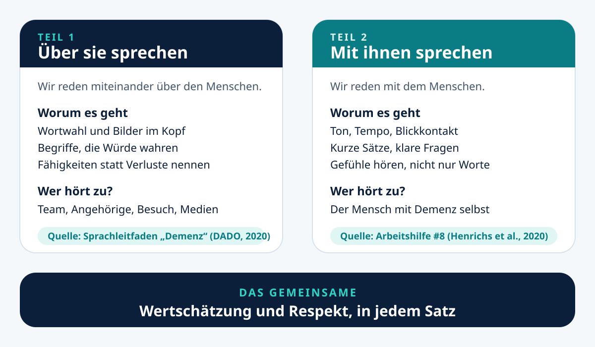
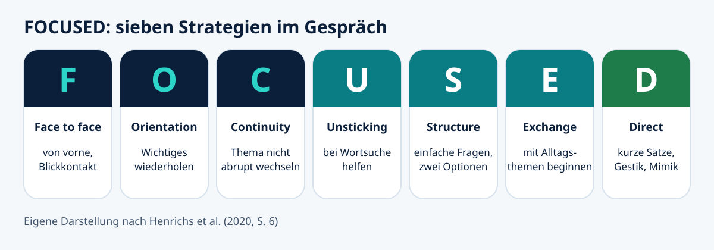

Seit ein paar Jahren höre ich auf der Arbeit bewusster zu. Nicht darauf, was wir zu Menschen mit Demenz sagen, sondern darauf, was wir über sie sagen. Das ist ein Unterschied, und er ist mir erst beim Hinhören aufgefallen. Ich höre Sätze, die abwertend klingen, von Kolleginnen und Kollegen und oft von Angehörigen, und manchmal fallen sie, während der Mensch, um den es geht, danebensteht. Dann fasse ich mir an den Kopf und sage etwas. Das tue ich unabhängig davon, ob die Person es versteht oder nicht.
Dieser Beitrag verbindet zwei Quellen, die ich gelesen habe. Der Sprachleitfaden „Demenz“ der deutschsprachigen Alzheimer- und Demenz-Organisationen beantwortet, wie wir über Menschen mit Demenz sprechen sollten (Deutschsprachige Alzheimer- und Demenz-Organisationen [DADO], 2020). Die Arbeitshilfe „Kommunikation bei Demenz“ der Gesellschaft für Qualitätsmanagement in der Gesundheitsversorgung beantwortet, wie wir mit ihnen sprechen (Henrichs et al., 2020). Am Ende des Beitrags kündige ich eine druckbare Übersicht mit 15 Tipps an, die beide Seiten zusammenfasst.
Zwei Fragen, die oft verwechselt werden
Frage eins: Wie rede ich mit einem Menschen, der eine Demenz hat? Dazu gibt es Methoden, Schulungen und viel Erfahrung. Frage zwei: Wie rede ich über diesen Menschen, im Team, mit Angehörigen, im Bekanntenkreis? Dazu denken die wenigsten nach.
Dabei hängen beide zusammen. Der Sprachleitfaden sagt es deutlich: Die Worte, die wir wählen, beeinflussen Menschen mit Demenz, ihr Umfeld und die Öffentlichkeit. Sie wirken auf Stimmung und Selbstwertgefühl der Einzelnen, und sie prägen, was andere über Demenz denken (DADO, 2020, S. 3).

Über Menschen mit Demenz sprechen
Die Haltung vor den Wörtern
Der Leitfaden beginnt nicht mit einer Wortliste, sondern mit einer Haltung. Sie ist geprägt von Wertschätzung und Respekt. Die Diagnose Demenz ist nur ein Teil eines Menschen mit Lebensgeschichte, Persönlichkeit und Gefühlen und darf nie auf den ganzen Menschen übertragen werden (DADO, 2020, S. 3). Respektvolle Sprache stellt deshalb den Menschen, seine Ressourcen (also das, was er noch kann) und seine Erfahrungen in den Vordergrund. Und sie gilt unabhängig davon, ob die Person beim Gespräch dabei ist (DADO, 2020, S. 3).
Das ist der Satz, der mich am meisten beschäftigt. Er beantwortet die Ausrede, die ich oft höre: Die kriegen das ja sowieso nicht mit.
Welche Wörter der Leitfaden empfiehlt und welche nicht
Der Leitfaden nennt bevorzugte Begriffe und solche, die nicht verwendet werden sollten. Die Begründung ist einfach: Viele der abgelehnten Begriffe sind respektlos und kränkend. „Leiden“ und „Opfer“ stigmatisieren. „Dementer Mensch“ setzt die Krankheit vor die Person und macht den Menschen mit seiner Krankheit gleich. Wer von „Menschen mit Demenz“ spricht, betont dagegen, dass sie zuallererst Menschen sind (DADO, 2020, S. 8).
| Statt | besser |
|---|---|
| Demente, dementer Mensch | ein Mensch mit Demenz, ein Mensch, der mit einer Demenz lebt |
| er leidet an Demenz, Opfer | er lebt mit einer Demenz, ein von Demenz Betroffener |
| senil, verkalkt | kognitive Einschränkungen; die Symptome selbst beschreiben, etwa Gedächtnis- oder Wortfindungsstörungen |
| schwieriges, problematisches Verhalten | verändertes Verhalten, Ausdruck unerfüllter Bedürfnisse, aggressive Reaktion (nicht „aggressives Verhalten“) |
| frühe Demenz (bei unter 65 Jahren) | Demenz im jüngeren Lebensalter |
| Abwertendes wie „krank im Kopf“ oder „plemplem“ | keine Ersatzformulierung, sondern weglassen |
Symptome beschreiben statt Etiketten verteilen
Besonders hilfreich finde ich den Gedanken hinter dem Begriff „verändertes Verhalten“. Der Leitfaden erklärt, dass Verhaltens- und Stimmungsänderungen meist Ausdruck von Bedürfnissen oder Empfindungen sind, die ein Mensch nicht mehr in Worte fassen kann, etwa Schmerz, Langeweile, Einsamkeit, Angst, aber auch Freude oder Zuneigung (DADO, 2020, S. 4). Ein Beispiel aus dem Alltag, erfunden, aber typisch: Eine Bewohnerin ruft immer wieder durch den Flur. „Die ist heute wieder schwierig“ beschreibt nichts. „Sie ruft seit dem Frühstück und hat noch nichts getrunken“ beschreibt etwas, mit dem wir arbeiten können.
Auch der in der Pflege verbreitete Begriff „herausforderndes Verhalten“ wird im Leitfaden eingeordnet: Aus Sicht der Menschen mit Demenz steckt keine Absicht dahinter, herauszufordern. Herausfordernd ist es für die Umgebung (DADO, 2020, S. 7).
Über Angehörige sprechen
Ein Punkt, den ich vorher nicht kannte: Menschen mit Demenz bevorzugen es in der Regel, dass Wendungen wie „mit Demenz leben“ auf sie selbst bezogen werden und nicht auf die Angehörigen. Über An- und Zugehörige sagen wir lieber, dass sie jemanden begleiten, unterstützen oder für ihn sorgen. Und nicht jeder möchte „pflegende Angehörige“ genannt werden, deshalb fragen wir, wenn es geht (DADO, 2020, S. 9).
Die Betreffenden fragen
Der Leitfaden hält fest, dass nicht jede und jeder die eigene Erfahrung in derselben Weise beschrieben haben möchte. Wenn möglich, fragen wir die Person direkt, und es gehört zur Würde, diese Wünsche zu respektieren (DADO, 2020, S. 5). Das gilt auch für den Begriff Demenz selbst. Der Leitfaden hält ihn weiter für verwendbar, weist aber darauf hin, dass er eine komplexe Gesamtheit von Symptomen mit unterschiedlichen Ursachen bezeichnet (DADO, 2020, S. 3).
Mit Menschen mit Demenz sprechen
Kein Rezept, aber eine Richtung
Die Arbeitshilfe der GQMG beginnt ehrlich: Für die Kommunikation mit Menschen mit Demenz gibt es kein Rezeptwissen. Jede Beziehung und jede Kommunikation muss individuell gestaltet werden (Henrichs et al., 2020, S. 4). Das passt zu dem, was ich selbst erlebe. Die Kommunikation ist jeden Tag neu, und man muss sich immer wieder neu darin finden. Was die Arbeitshilfe liefert, sind Leitgedanken, an denen man sich festhalten kann, wenn man nicht weiß, wie man anfangen soll.
Was die Beziehung trägt
Drei Aspekte nennt die Arbeitshilfe als besonders hilfreich: Echtheit und Wahrhaftigkeit, also kein Verstehen vortäuschen. Validation, also die Person wertschätzend wahrnehmen, ernst nehmen und annehmen, wie sie ist. Und Empathie, sich einfühlen und verstehen wollen, wofür Biografie und individuelles Krankheitserleben wichtig sind (Henrichs et al., 2020, S. 4). Gute Beziehungsarbeit kann in allen Stadien Symptome wie Unruhe, Angst oder Apathie abmildern, negative Momente in der Beziehung können sie verstärken (Henrichs et al., 2020, S. 4).
„Die kriegen nichts mit“ stimmt so nicht
Die Arbeitshilfe widerspricht dem Satz, den ich so oft höre. Häufig werde ein Mensch mit Demenz nicht ernst genommen, oder man gehe davon aus, dass er nichts mehr mitbekommt. Trotz kognitiver Einbußen könne er sich aber bis in das späte Stadium in Situationen einfühlen und nehme gerade auf der Beziehungsebene noch sehr viel wahr (Henrichs et al., 2020, S. 4). Nonverbale und emotionale Zeichen nehmen Betroffene sensibel wahr (Henrichs et al., 2020, S. 2). In meinem Alltag erlebe ich das genauso: Manche Bewohnerinnen und Bewohner lesen Stimmungen und Mimik besser als Menschen ohne kognitive Einschränkungen. Das ist meine Beobachtung und kein Studienergebnis.
Wer das ernst nimmt, kann auch nicht mehr über jemanden hinweg reden.
Konkret im Gespräch
Für Bezugspersonen nennt die Arbeitshilfe eine ganze Reihe praktischer Hinweise. Die wichtigsten, so wie sie dort stehen (Henrichs et al., 2020, S. 4 und 5):
- von vorne und auf Augenhöhe ansprechen, in wenigen Worten, kurzen und klaren Aussagen, ruhig und langsam, und Zeit zum Antworten lassen;
- Verneinungen vermeiden und möglichst keine Pronomen benutzen: statt „Ihre Tochter hat angerufen. Sie kommt gegen Mittag“ lieber „Ihre Tochter kommt gegen Mittag“;
- in der Ich-Form sagen, was man vorhat: „Ich möchte nun mit Ihnen in den Garten gehen“;
- eher nach „Wie? Was? Wann? Wo?“ fragen als nach dem „Warum?“, weil das nach Ursachen fragt, die der Mensch vielleicht nicht mehr herstellen kann (Henrichs et al., 2020, S. 7);
- Gefühle in Sprache übersetzen und den Menschen nicht verbessern oder verändern wollen, sondern so annehmen, wie er ist;
- Wort und Körpersprache in Einklang bringen, ohne Widersprüche.
Ehrlich bleiben gehört dazu. Die Arbeitshilfe warnt davor, Unwahres zu sagen, das verwirre eher, als dass es hilft (Henrichs et al., 2020, S. 6).
Drei Methoden im Überblick
FOCUSED ist ein in den USA entwickeltes Programm mit sieben Strategien, deren Anfangsbuchstaben das Wort ergeben. Bild 2 zeigt sie in Kurzform (Henrichs et al., 2020, S. 6).

Die ABC-Methode ist für Situationen gedacht, in denen jemand aggressiv reagiert: Konfrontation vermeiden (Avoid confrontation), vorausschauend handeln, also ausweichen oder das Thema wechseln (Be practical), und die beobachteten Gefühle in Worte fassen und trösten (Clarify the feelings and comfort). Häufig werde die Person danach ruhiger (Henrichs et al., 2020, S. 6).
Bei der Validation geht es darum, die Bedürfnisse hinter den Äußerungen zu erkennen. Die Arbeitshilfe gibt ein Beispiel: Sagt eine Bewohnerin, sie wolle nach Hause, obwohl sie schon dort ist, kann sich dahinter das Bedürfnis nach Geborgenheit verbergen (Henrichs et al., 2020, S. 6). Darum steht in der Aufzählung der Grundsätze auch: auf Bedürfnisse und Gefühle achten, nicht so sehr auf den Wortsinn (Henrichs et al., 2020, S. 7).
Beispiel (fiktiv): Herr K. läuft abends zur Tür und sagt, er müsse zur Arbeit. Er hat seit Jahren nicht mehr gearbeitet. „Sie sind in Rente, das wissen Sie doch“ würde ihn korrigieren. Mit den Hinweisen der Arbeitshilfe gehst du auf Augenhöhe zu ihm, benennst das Gefühl („Es ist Ihnen wichtig, gebraucht zu werden“), fragst nach seiner Arbeit statt nach dem Warum, und bietest eine Aufgabe an. Ob er sich danach beruhigt, hängt von der Person ab. Ein Rezept ist das nicht.
Wo beides zusammenkommt
Beide Quellen gehen von derselben Grundhaltung aus: Der Mensch steht vor der Diagnose. Der Sprachleitfaden sagt es für das Reden über ihn, die Arbeitshilfe für das Reden mit ihm. Sie spricht außerdem von einer kommunikativen Asymmetrie zwischen Pflegenden und Erkrankten. Der Mensch sei besonders verletzlich, wenn Entscheidungen über ihn getroffen werden, die er nicht beeinflussen oder nachvollziehen kann, und das lasse sich durch gelingende Kommunikation ausgleichen (Henrichs et al., 2020, S. 3).
Dass es nicht von selbst gelingt, zeigen die Quellen auch an sich selbst. Meine Einordnung: Die Arbeitshilfe spricht häufig von „dementen Menschen“. Das ist genau die Wendung, die der Leitfaden (DADO, 2020, S. 8) vermeiden will. Und sie beschreibt Menschen in späteren Stadien mit dem Entwicklungsniveau eines Vorschulkindes oder Säuglings (Henrichs et al., 2020, S. 5), während der Leitfaden „kindisch“ und „wie Kinder werden“ ausdrücklich als nicht zu verwendende Wendungen aufführt (DADO, 2020, S. 8). Beide Dokumente tragen den Stand 2020. Ich lese deshalb die Methoden der Arbeitshilfe, übernehme aber die Wortwahl des Leitfadens. Daran sieht man gut, dass Sprache sich weiterentwickelt und wir mitlernen müssen.
Warum Schulung dazugehört
Die Arbeitshilfe nennt Schulungen der Mitarbeitenden zu wertschätzender Kommunikation, zur Erkrankung und zu konkreten Methoden als wichtige Voraussetzung (Henrichs et al., 2020, S. 3). Kommunikationstrainings für Pflegekräfte führten in der zitierten Untersuchung zu höherer erlebter sozialer Kompetenz, mit positiven Folgen für die Lebensqualität der Erkrankten und die psychische Belastung der Pflegenden (Henrichs et al., 2020, S. 2 und 3).
Meine eigene Meinung dazu, ausdrücklich nicht aus den Quellen: Es sollte regelmäßig Schulungen geben, aus meiner Sicht mindestens alle zwei Monate, auch wenn Zeit knapp ist. Leitlinien und Forschung bleiben nicht stehen, und niemand kann alles wissen. Außerdem finde ich, dass es keine Schwäche ist zu sagen: Ich kann das nicht oder ich will das nicht. Nicht jeder kann oder will mit Menschen mit Demenz arbeiten. Wer das offen sagt, zeigt Respekt vor den Bewohnerinnen und Bewohnern, und eine sichere Umgebung entsteht nur, wenn solche Dinge ausgesprochen werden dürfen. Wer sich dafür entscheidet, braucht dafür Schulung und die Freude an Kommunikation. Ohne sie geht es nicht.
Die 15 Tipps zum Ausdrucken
Aus beiden Quellen habe ich 15 Tipps zusammengestellt: sieben fürs Reden über Menschen mit Demenz und acht fürs Reden mit ihnen, auf wenige Seiten verdichtet, im Layout dieser Seite und zum Ausdrucken für den schnellen Alltag.
Die PDF mit den 15 Tipps folgt in Kürze hier auf dieser Seite. Sie enthält zu jedem Tipp die Fundstelle in der Quelle, damit du nachlesen kannst, woher er kommt.
Das Wichtigste in Kürze
Es gibt zwei Fragen: wie wir mit Menschen mit Demenz sprechen und wie wir über sie sprechen. Der Sprachleitfaden sagt, dass Wörter Stimmung, Selbstwert und das öffentliche Bild prägen und dass respektvolle Sprache auch gilt, wenn die Person nicht dabei ist. Die Arbeitshilfe sagt, dass es kein Rezeptwissen gibt, wohl aber Haltung und Methoden: echt sein, ernst nehmen, einfühlen, kurze klare Sätze, Gefühle benennen, nicht korrigieren. Beides entsteht aus derselben Wertschätzung.
Häufig gestellte Fragen
Darf ich das Wort „Demenz“ noch benutzen?
Ja. Die Alzheimer- und Demenz-Organisationen halten den Begriff weiterhin für verwendbar, weil er bekannt, verständlich und seit der Antike belegt ist. Sie bitten aber um einen rücksichtsvollen Umgang damit (DADO, 2020, S. 3).
Darf ich einem Menschen mit Demenz widersprechen?
Die Arbeitshilfe nennt als Grundsatz, Äußerungen zu akzeptieren und nicht zu widersprechen. Zugleich soll man nicht lügen, denn die Person würde das merken (Henrichs et al., 2020, S. 7). Wie das im Einzelfall aussieht, hängt von der Situation ab.
Muss ich bei der Kommunikation auf die Stufe der Erkrankung achten?
Die Arbeitshilfe stellt ein Stufenmodell nach Böhm (1992) vor, mit sieben Interaktionsstufen und passenden Kommunikationsarten (Henrichs et al., 2020, S. 5). Ich habe es hier nicht im Detail aufgenommen. Es sagt zum Teil Dinge, die nicht zur heutigen Wortwahl passen (siehe oben), und das Original habe ich nicht gelesen.
Zur Einordnung der Quellen: Der Sprachleitfaden ist eine Veröffentlichung der Alzheimer- und Demenz-Organisationen, die Arbeitshilfe stammt aus der Fachgesellschaft GQMG. Beides sind keine Leitlinien mit Empfehlungsgraden. Die S3-Leitlinie Demenzen der AWMF habe ich für diesen Beitrag nicht ausgewertet. Die Arbeitshilfe ist von 2020, der Leitfaden hat den Stand August 2020 und wurde im März 2025 nachgedruckt. Die Aussagen zur Wirksamkeit von Schulungen stammen dort aus zitierten Einzelstudien, die ich nicht selbst gelesen habe.
Quellenverzeichnis
- Deutschsprachige Alzheimer- und Demenz-Organisationen. (2020). Sprachleitfaden „Demenz“: Wie sprechen wir über Demenz in einer angemessenen Weise? Deutsche Alzheimer Gesellschaft. https://www.deutsche-alzheimer.de/fileadmin/Alz/pdf/Broschueren/Sprachleitfaden-Demenz-INTERNET.pdf (abgerufen am 23.10.2026)
- Henrichs, M., Herbig, N., Neufang, A., Enseleit, I., Heun, S., Holtel, M., Josuks, H., Pilz, S., Pivernetz, K., Poimann, H., Rode, S., Schulhoff, I., Stapenhorst, K., Weber, H. & Zeien, K. (2020). Kommunikation bei Demenz (Arbeitshilfe Bessere Kommunikation #8, 1. Aufl.). Gesellschaft für Qualitätsmanagement in der Gesundheitsversorgung (GQMG), AG Kommunikation im Qualitätsmanagement und Risikomanagement. https://www.gqmg.de/media/redaktion/Publikationen/Arbeitshilfen/GQMG_ABK_08._Kommunikation_bei_Demenz_12.07.20.pdf (abgerufen am 23.10.2026)
Die Methode von Böhm (1992) im Abschnitt Häufige Fragen kenne ich nur aus der Arbeitshilfe, sie steht deshalb nicht im Verzeichnis.
Hinweis: Dieser Beitrag dient der allgemeinen fachlichen Information und Bildung. Er ist keine Pflegeberatung im Sinne des § 7a SGB XI (individuelle Beratung und Hilfestellung durch einen Pflegeberater oder eine Pflegeberaterin) und keine ärztliche Beratung. Er ersetzt weder die Beratung durch Fachpersonen noch die Anweisungen der Pflegefachkraft oder der Ärztin oder des Arztes vor Ort. Pflegeberatung erhältst du bei deiner Pflegekasse.
Weiterlesen: Demenz in der Pflege: Meine Erfahrung auf dem geschlossenen Bereich und Gespräche im Pflegealltag: Kleine Worte, große Wirkung. Alle Beiträge findest du im Blog.